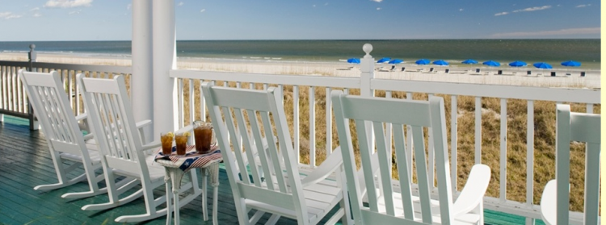
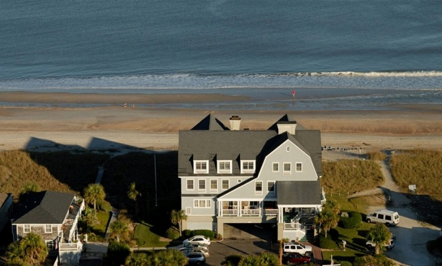
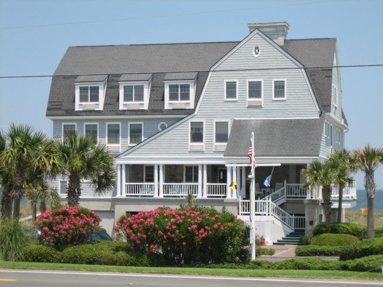

.png)
.PNG)
.PNG)
.PNG)
.PNG)
.PNG)
.JPG)
.JPG)
.PNG)
.PNG)



I hope all of you have had a wonderful week. Are you lucky enough to have next week off for the 4th of July? Well, if you are, perhaps you can visit the place I am writing about today. I have one of my most favorite inns that I want to share with you …and then I will explain the title of this post.
This is Elizabeth Pointe Lodge on Amelia Island in …no, not New England….Did you guess?
Florida.
Yes, Florida. 🙂
source
Maybe the palm trees gave it away, but it IS a gray shingled beauty on the beach with many touches of New England both inside and out. David and Susan Caples, the previous gracious owners, traveled to many places studying architectural details before they built this amazing inn. Isn’t it beautiful?
It is constructed as 4 floors (as the elevator says) with the first “floor” being for parking under the building. If you choose to not take the elevator and instead come in from out front, you will climb the stairs up to the second floor entry and this porch. (You really should take the stairs. It is more impressive coming in through the front doors rather than the elevator.)
 pinterest via elizabethpointelodge.com
pinterest via elizabethpointelodge.com
Then you enter through some old doors into their lobby. source
source
I can still vividly remember the feeling I had entering that lobby for the first time. It was one of those bright sunny summer days, and I was overwhelmed by the sunlight streaming through all the windows and that expansive view of the ocean – not to mention the beauty of the architecture and interior details….the old wood floors, the beadboard, the bookcases, the window seat…just everything. It was the most beautiful comfortable place I believe I had ever been in…and it just felt like home. And it still does every single time I walk through those front doors. (Can you tell I like this place?! 🙂 )
Lemonade is served all afternoon here in this space, and in the evening there is a wine and appetizer hour for the guests. We don’t drink, so we’ve not done the wine hour, but we have certainly enjoyed the lemonade many many times.
The Lodge operates as a bed and breakfast. Breakfast is served each morning in this dining area – located in a room behind the fireplace wall of the lobby.
The breakfasts are wonderful with eggs, grits, cereal, pancakes, fruit, bacon, homemade breads, etc.
You can eat your meal anywhere you would like – the dining room, the lobby, your room, or out on the porch. 
They also have a light lunch menu and a dessert menu that you can order from all day long. (Try the brownie with ice cream or the pecan pie…yum.) And there are homemade cookies available for purchase in a big jar on the innkeeper’s desk in the lobby. So you definitely don’t go hungry here!
Would you like to see some of the rooms in the inn?
This was the very first one we stayed in many many years ago. I have a feeling it has been redecorated since the mid-90’s. Susan likes to redecorate more than I do, and with 25 guest rooms, she is constantly shopping and redoing.
 Jumping Rocks Photography via bnbfinder.com
Jumping Rocks Photography via bnbfinder.com
Here are a few more rooms…

Do you have a favorite yet?
These are just a few of the rooms, and I’ve not shown you any of the ones in the adjacent building. The decor seems to be shifting towards a more upscale – even Caribbean influenced- style and away from the old nautical New England style (still my favorite though.)
Of course when you are there, the beach is the big draw…
After breakfast, we usually gather up all our gear and head down the sandy path to the water’s edge where bright blue beach chairs and umbrellas from the inn are waiting. For some reason, this area often has sharks’ teeth wash up on the shore. We walk and look. My husband is the best at finding them. He can spot them in a heartbeat. Me? No way. My blind self has yet to find one after all these many years!
So what in the world am I blaming on this wonderful inn? Well, in 1994 I was pregnant with our third child (no I’m not blaming the pregnancy on the inn), and with the third child came a desire for a different home. We lived in a beautiful house that had only 2 finished bedrooms. A third child required the completion of the upstairs (2 more bedrooms and a bath) and moving the children there. The master bedroom was downstairs. I did not like that idea. Plus, I felt like I wanted something a little more casual in feel for our home than the one we were in. That same year – 1994, we visited Elizabeth Pointe Lodge for the very first time – me very pregnant and two little boys in tow. (Pardon my I’m-going-to-kill-you-if-you-take-my-picture-while-I’m-pregnant look.)
We walked in those front doors, and I fell in love with the place. And my brain started turning.. (Dangerous thing, my husband says.) I knew we could not move to the beach and build an inn, but we could build a home with many of the same details. So for the rest of the year, as we looked at house plans, I looked for homes that could emulate some of the architectural details.
We finally settled on a plan with some major revisions, and then my husband and I made a return trip to EPL the following year (without all the kiddos), and we photographed the interior details I had fallen in love with and wanted to use in our new home. I was so under the influence of the place it was not even funny!
Here’s a little peek at some of the details we copied from Elizabeth Pointe Lodge. Remember, I have since changed a good bit here, but I think you can still tell the influence it had on me at the time even though these photos were taken 17 years later. I’ve tried to label all the things we were able to imitate. When we built the house, all of the rooms were white…keep that in mind as you look at these…
I loved the halls of the inn that rambled through the upstairs rooms, and they were what I most wanted to copy. Unfortunately, our hallway turned out to be straight as an arrow (and it is not nearly as long as this photo makes it look to be.) I managed to find the fish prints and the large fish charts that EPL had hanging in theirs, and I had them framed and hung in our hallway and also in our sons’ room.
The kitchen cabinets borrowed the brass drawer pulls and later the wooden countertops, but we did not do the cut out doors like they have in theirs nor those gorgeous latches.
I think the bathrooms have the most similarities still. Just picture mine in its original white paint.
A few other details we stole: the floor to ceiling bookcases in the greatroom like those in the photo with the boys and pregnant me above, the white walls with stained wood trim used throughout the inn, the gray exterior with white trim, (picture our little house in the header photo painted gray as it was initially,) model pond yachts, white rockers, and white wicker on the porches.
So you see, I blame Elizabeth Pointe Lodge for the way our house was initially decorated. I was under its spell. But it wasn’t the only one to influence me at the time. Let’s add to the mix. Our construction was in 1995-1996 when the Olympics were held in Atlanta, and Ralph Lauren was big in the home decor industry. The house had no choice except to be done in an all-American style. I was definitely caught up in the trends of the time.

Since then, our nautical house detailing is gone and has been replaced with a mix of traditional, cottage, and southern styling..reflecting our life and location more accurately. BUT that does not mean I don’t like a place by the beach. Oh no…quite the opposite. I would love to be sitting on this porch at Elizabeth Pointe Lodge right now enjoying that view and the warm ocean breeze.
 Oyster magazine
Oyster magazine
Wouldn’t you too? But since we can’t do that right now, if you will go here you can watch a little video tour of the inn. (I recommend turning on something with the sound of crashing waves for a better effect. 🙂 )
Hope you all have a fun filled summer weekend!
And if you happen to be at the beach, look for a shark’s tooth for me please.

update: 5/3/14 Elizabeth Pointe Lodge sold to new owners earlier this year. The new owners are in the process of changing all the furnishings and accessories in the inn, so I do not think it will still have its New England charm that it once had. It will still have its gorgeous ocean view. I do know that the new lobby furnishings look like this, (see below) and the rattan sofa and chair have been replaced with upholstered pieces. The wooden table in the corner is now a glass topped one.

Based on reviews from Tripadvisor, once all of the updating has been done, new photos of the rooms will be added so that you can see how it will look. Just thought you should know!


.PNG)
I haven’t heard of that Inn but would love to visit it. I can see how it influenced your home and decorating choices (at the time). A few years ago I saw a program on the travel channel that featured Shutters On The Beach in Santa Monica, California. It’s hard to find good pics of the hotel on line so I ordered the DVD so I could watch it any time I wanted. I think I ordered it off the Travel Channel. Again, it’s hard to see how gorgeous it is from the on line photos but trust me, it’s beautiful! It’s on my bucket list of places to visit.
Isn’t this weather brutal? We’re grilling out steaks tonight with daughter and her family but we won’t be eating outside….too hot!
———————————————————————
Judy, when we were planning a trip for our family to California a few years ago I checked out Shutters on the Beach. You are right. It is beautiful! We ended up going to Napa, Carmel, and Yosemite, so we did not make it to Santa Monica. I even loved their logo…thought about ordering their tote bag and some of their other neat things online! This weather IS awful. You won’t even need a grill for your steaks…just stick them on a table outside and they should cook all by themselves! Hope your beach trip was a good one.
Kelly
I ask again…have you considered being a travel agent or writing for a travel magazine? You are good at this!
Adding this inn to our bucket list!
———————————————————————-
Susan, I had not thought about writing for a travel magazine until this morning, and then I thought, “Wouldn’t THAT be a fun job!” And now here you are suggesting it to me! If you hear of any openings let me know. ha ha. I do hope you get to go to Elizabeth Pointe. It is a gorgeous place to stay.
Kelly